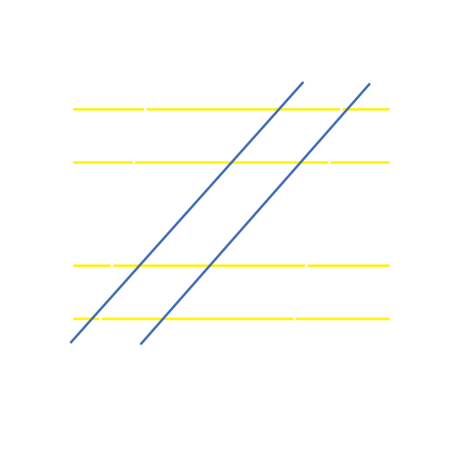
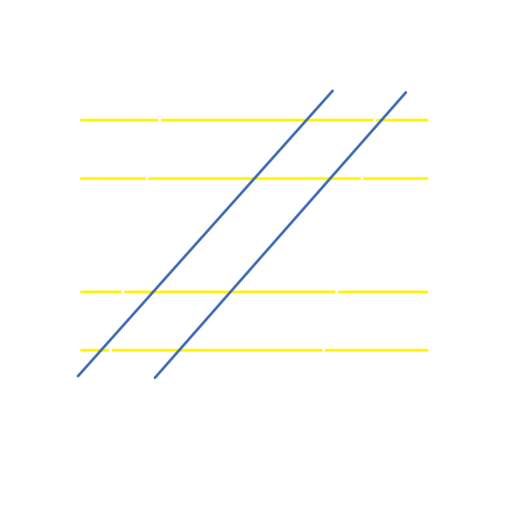

Regulator Nova
in Heavy Italic
Regulator was originally designed by Rian Hughes in 1995 and then updated in 2006. In 2018, Hughes released Regulator Nova which was a revised and extended version of Regulator. The typeface is similar to early sans serifs with an M and R more closely related to British forms (Regulator).
Hughes has worked in both the British and American comic industries designing logos (Batman and Robin, Batgirl, the X-Men, Captain America, and more), title sequences, posters, book covers, and more (Device Fonts).
1st click:
All four of the yellow lines are parallel
2nd click:
The two white lines aren't quite parallel and the corners of the "Z" don't line up with the slant of the crossbars
3rd click:
The two bluelines are also not quite parallel making the bottom part of the "Z" slightly wider than the top
4th click:
All of the lines are combined to show the full shape of the "Z"
Sources
Device : Type, Design and Imagery by Rian Hughes, www.devicefonts.co.uk/cgi-bin/device3.cgi?action=home.
"Regulator Nova - Webfont & Desktop Font" Univers - Webfont & Desktop Font, www.myfonts.com/fonts/device/regulator-nova/.
Z
Z
 


